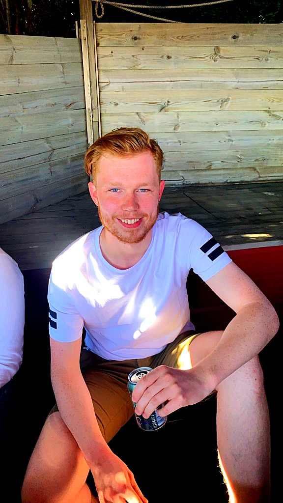

About us

Mitt navn er Sander Hammersland og velkommen til min første nettside. jeg er en gammel elektriker som ønsket meg nye utfordringer i livet, jeg sjekket opp i litt forskjellig før hjertet mitt falt på valget å bli en utvikler. rainydays er mitt første bidrag til verden av utviklere så håper du liker det og gi kritikk om du ønsker ;)